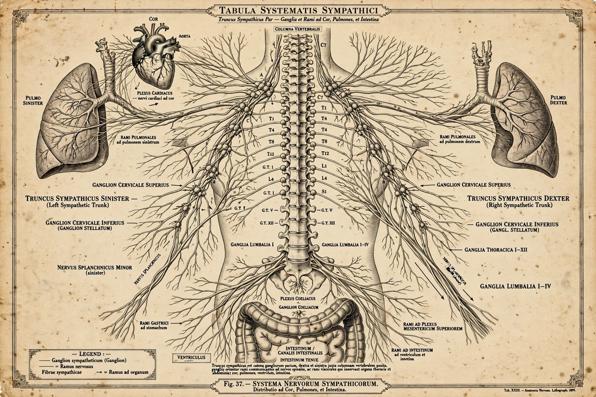

| Sympathetic nervous system | |
|---|---|
 | |
| Part of | Autonomic nervous system |
| Function | "Fight-or-flight" response; mobilisation of the body under stress |
| Main transmitters | Noradrenaline (norepinephrine); acetylcholine preganglionically |
| Antagonist division | Parasympathetic nervous system |
The sympathetic nervous system (SNS) is one of the three divisions of the autonomic nervous system, the others being the parasympathetic and enteric nervous systems. It is best known for orchestrating the body's "fight-or-flight" response: under stress it increases heart rate and blood pressure, dilates the airways and pupils, mobilises stored energy, and diverts blood flow from the gut and skin toward skeletal muscle. It is also continuously active at a basal level to maintain homeostasis, for example by regulating blood vessel tone.
Sympathetic outflow arises from the thoracolumbar segments of the spinal cord (T1–L2). Preganglionic neurons, whose transmitter is acetylcholine, have short fibres that synapse in the paired sympathetic trunks (paravertebral ganglia) running alongside the vertebral column, or in prevertebral ganglia of the abdomen such as the coeliac ganglion. Postganglionic fibres are long and mostly noradrenergic, releasing noradrenaline (norepinephrine) onto target organs. Exceptions include sweat glands, supplied by cholinergic sympathetic fibres. The adrenal medulla functions as a modified sympathetic ganglion: its chromaffin cells release adrenaline (epinephrine) and noradrenaline directly into the bloodstream, amplifying and prolonging sympathetic effects.
These actions are mediated by adrenergic receptors — alpha and beta subtypes — whose distribution among tissues explains the differing effects of adrenaline-like drugs. Beta blockers, for example, blunt sympathetic effects on the heart.
Together with the hypothalamic–pituitary–adrenal (HPA) axis, the sympathetic–adrenal–medullary system forms the core of the physiological stress response described by Walter Bradford Cannon and Hans Selye. Chronic over-activation of the sympathetic system is implicated in hypertension, anxiety disorders and other conditions.